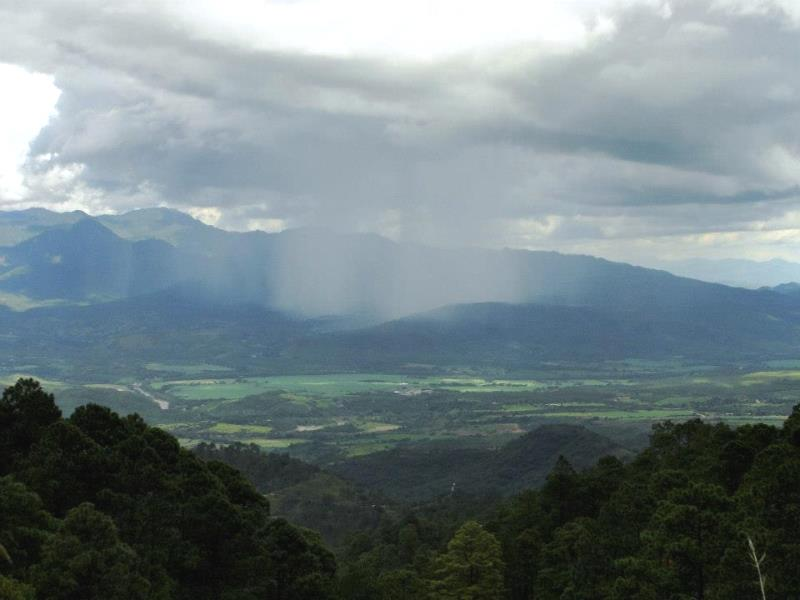
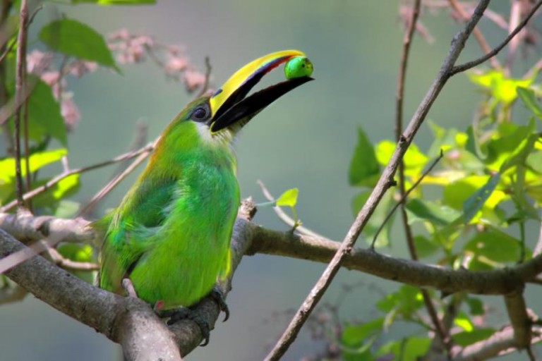
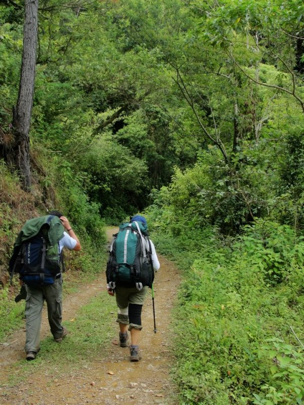
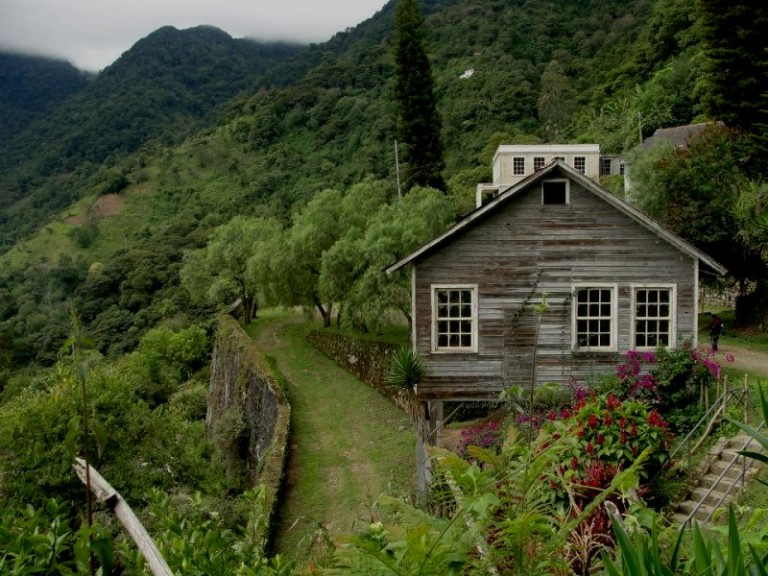
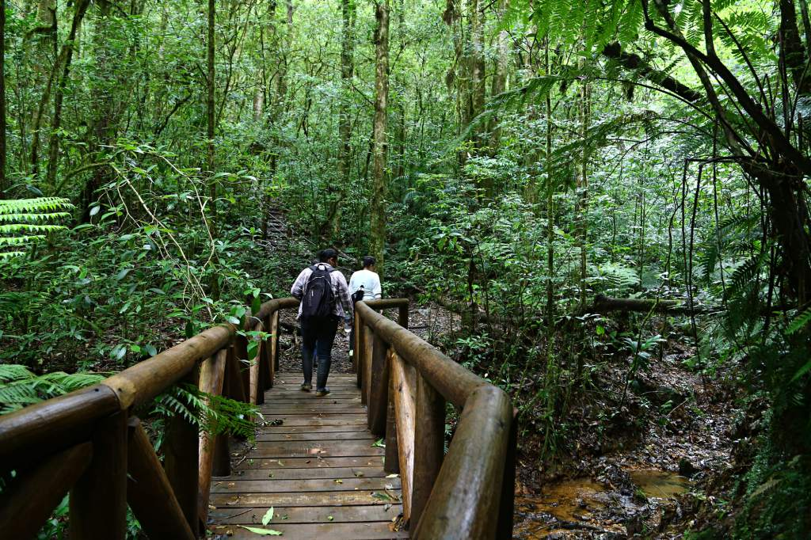

Pagina principal
Animales en Honduras
Parque Nacional la tigra
Biosfera del Rio Platano
Parque Nacional la Tigra
El Parque Nacional La Tigra está ubicado en el departamento de Francisco Morazán, aproximadamente a 15 kilómetros al noreste de Tegucigalpa.
El Parque Nacional La Tigra cuenta con una extensión de 24,040 hectáreas de bosque dividida en zona de amortiguamiento y zona núcleo, que forma parte de la cadena montañosa central de Honduras. El parque nacional es una fuente generadora de agua dulce y pura, así como zona de refugio para la biodiversidad nativa y migratoria.
La Tigra tiene una gran variedad de flora y fauna, entre la vegetación se puede mencionar especies de árboles como el Pino de Ocote, Robles, Encinos, Liquidámbar, Aguacatillos entre otros. También existe diversidad de helechos, seis de ellos en peligro de extinción y los cuales son protegidos por Fundación Amigos de La Tigra, Amitigra.
En cuanto a fauna, en La Tigra existen diferentes especies de mamíferos, anfibios, reptiles y aves.
Entre la fauna hay especies de mamíferos, anfibios, reptiles y aves. Especies como tigrillos, guatusas, venados cola blanca, micos de noche, pumas y yaguaroundis viven dentro del parque nacional.
Aquí también podrá observar aves como jilgueros, pavas de montaña, quetzales, gavilanes, tucanes entre otras más. Entre los reptiles se mencionan pichetes o lagartijas, tamagases negros y verdes, bejuquillas, corales y boas. Los anfibios están representados por varias especies de ranas y sapos, pero éstos habitan en las áreas más húmedas del parque.
La variedad de insectos es impresionante, no se sabe cuántas especies habitan en el parque, lo que si podemos decir es que hay un excelente representante de los insectos, nos referimos a la mariposa azul o Morpho como comúnmente es llamada. En La Tigra también se investigan muchas especies de insectos nunca antes vistas en la región.
En el Parque Nacional La Tigra usted podrá vivir una experiencia inolvidable. Si usted es un apasionado de la naturaleza o se enamoró del lugar, usted puede un voluntario en el programa que organiza la Fundación Amigos de La Tigra, Amitigra. El objetivo es ayudar a preserva tan invaluable riqueza natural.
En La Tigra existen ocho senderos por recorrer: Sendero Granadillas, Jucuara, Bosques Nublados, La Esperanza, Sendero Principal, La Cascada y La Mina. Cada uno posee sus características y grados de dificultad, por lo que se recomienda realizar el recorrido con los guías autorizados.
En La Tigra existen ocho senderos por recorrer, y en donde se puede acompañar de helechos o árboles primarios.
Importante información para el visitante
El parque nacional cuenta con varias vías de acceso:
La entrada de Jutiapa, por El Hatillo y aldea Nuevo Rosario, por el valle de San Juancito.
Para llegar hasta el centro de visitantes Jutiapa, se recomienda abordar el autobús en la estación ubicada en el parque Herrera, frente al Teatro Nacional Manuel Bonilla, las horas de salidas desde Tegucigalpa hasta Jutiapa son: 7:00 AM, 9:00 AM, 2:00 PM, 4:00 PM y 5:00 PM de lunes a viernes. Sábado y domingo de 8:00 AM, 10:00 AM, 12:00 MD, 1:00 PM y 3:00 PM.
Este autobus lo dejará en la aldea El Chaparro, desde ahí tendrá que realizar una caminata de 20 minutos hasta el centro de visitantes. También puede llegar en vehículo propio si así lo desea.
Las horas de retorno del autobus de Jutiapa hasta Tegucigalpa son: 5:30 AM, 5:45 AM, 6:00 AM, 7:00 AM, 9:00 AM, 11:00 AM, 12:00 MD y 3:30 PM de lunes a viernes. Sábado y domingo se mantienen los horarios matutinos más las salidas a 12:50 MD y 3:00 PM.
Si desea viajar hacia el centro de visitantes El Rosario, en la gasolinera San Felipe, frente al hospital San Felipe, podrá encontrar el autobus que sale de Tegucigalpa hacia San Juancito. Las horas de salida son: 2:00 PM, 3:00 PM y 5:00 PM. Por la mañana puede tomar uno a las 6:00 AM y otro a las 10:30 AM, estas unidades se dirigen, una hacia La Villa de San Francisco y otra a Cantarranas, ambas lo dejarán en el desvío hacia San Juancito. Aquí podrá encontrar moto taxis para su traslado hacia el centro de visitantes.
Las horas para el regreso de San Juancito hacia Tegucigalpa son: 5:30 AM, 6:30 AM y 8:00 AM. La distancia del centro de visitantes a San Juancito es de un kilómetro. Si maneja vehículo propio, se recomiendan los todo terreno.
 